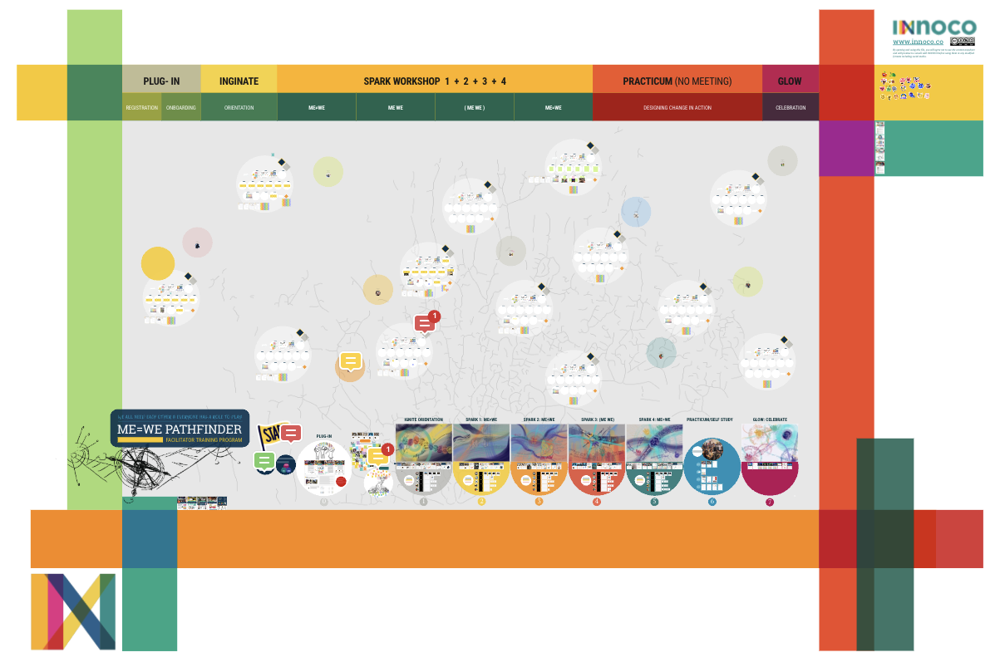

Pathfinder is how facilitators are made. You walk the full Loop — IGNITE to GLOW — as a practitioner first, then learn to hold it for others.
“Everyone has a role to play in community building.” If you love working with people, creating engaging space, seeking creative ways to build capacity to design and facilitate, and to grow a vibrant community where you live — this is a call for you.
MEWE PATHFINDERS is a community of individuals who are facilitator, teacher, coach, and/or facilitator-to-be, with interests and passion for community building, coaching or facilitation. Through a series of workshops, participants experience becoming a facilitator — guardians of transformative space — walking the MEWE Loop in a new light.
Heart-connecting activities and capacity-building tools are at the centre of the program. New pathfinders learn to build meaningful relationships, and spaces for creative community engagement.
Pathfinder is how facilitators are made. You walk the full Loop — IGNITE to GLOW — as a practitioner first: reflective journaling, creative expression, real practice between sessions, and co-facilitation alongside experienced guides. Head, heart, and hands, the whole way.
a person who goes ahead and discovers or shows others a path or way.
The pathfinder's elixir.
The end of this journey is not a qualification. It is a set of capacities: to open honest conversation about what our communities need, to begin the actions that help heal what is hurting where we live, and to keep widening the circle of who counts as us.
The journey is weighty. It asks you to work past your own constraints, and the rules are simple and strict — stay on the path until the final destination, where we celebrate together what each pathfinder has become, and what that has already changed for the people around them.
You experience the whole Loop before you ever hold it for anyone else — an inner journey from disconnection to co-creation, one stage at a time.

The program map from the first cohorts — every session, its stage, and the work that carries between them.
Completing the series earns you the MEWE Facilitator certificate — recognition you can carry beyond IN, into schools, work, and your own record of service. Certified pathfinders are invited to run MEWE workshops globally, and the door to the IN-Collective path opens if you want to go further.
She arrived wanting to make a difference, and overwhelmed by how large that sounded.
At IGNITE she met the others — each with a different vision, the same eagerness. In ME ≠ WE she saw how her own actions landed in the community around her. ME + WE showed her that her particular strengths mattered to the whole, and ( ME WE ) taught her what a group can carry that no one carries alone.
By ME = WE she was designing with people rather than for them. What she left with was not a technique for running a session; it was a different relationship with the place she lives.
— a story inspired by Alia, from the first Pathfinder cohort, 2022
The series is currently being reshaped — lighter, closer to real life — with everything we learned from the first cohorts. If you are interested, start a conversation and help shape what it becomes.